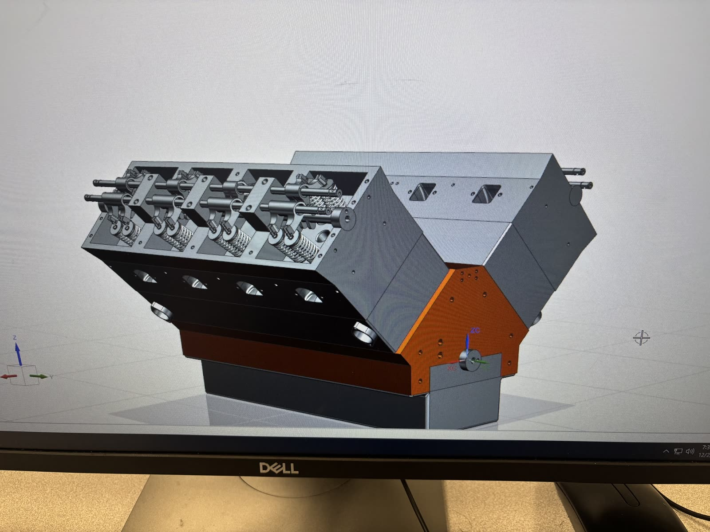
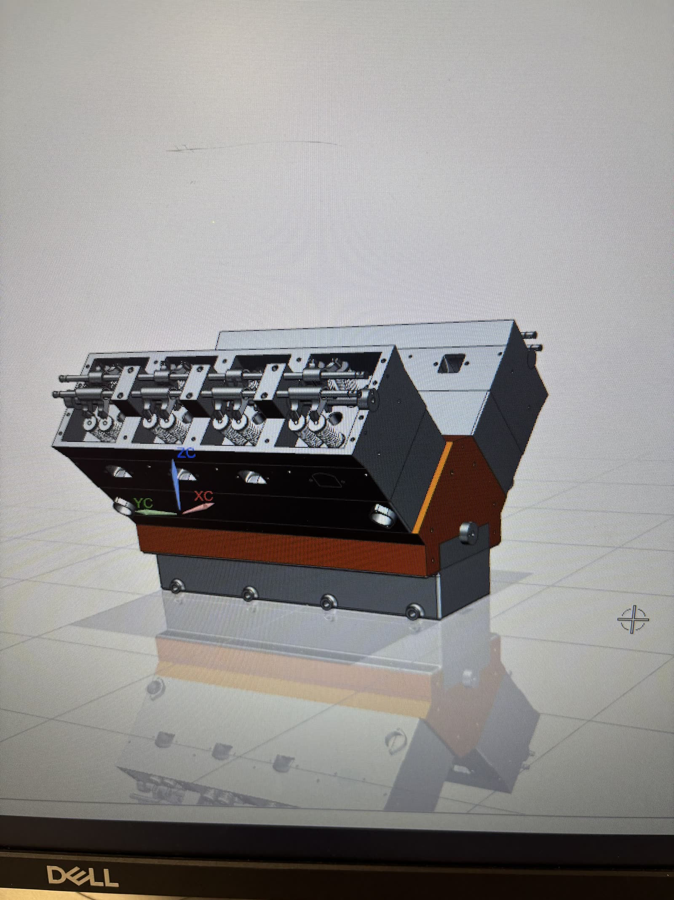
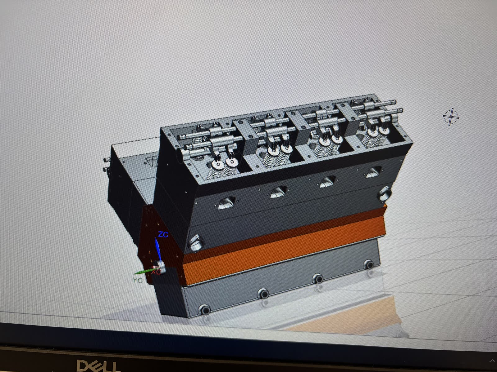
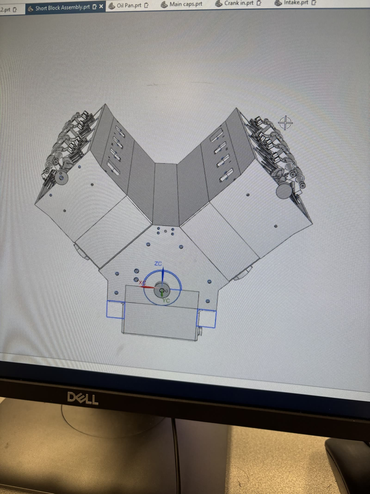
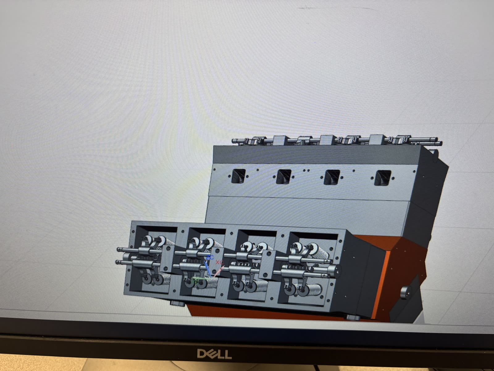
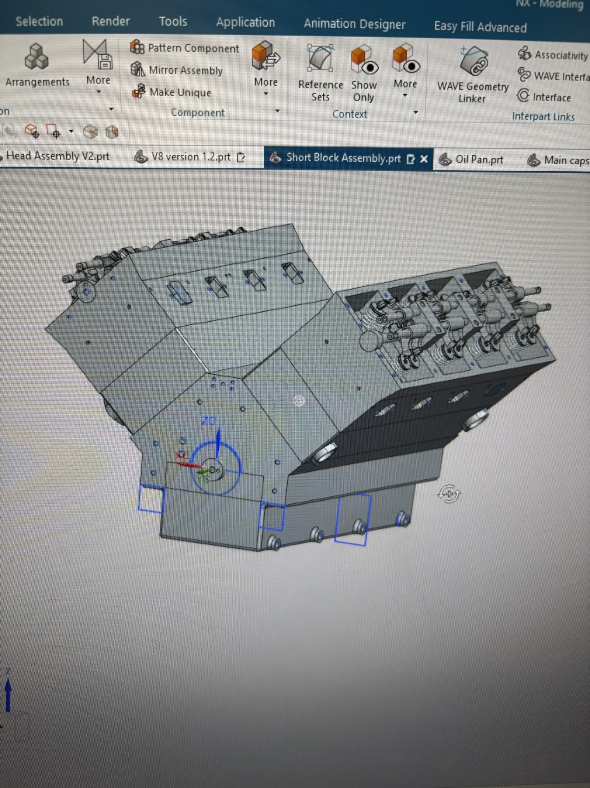
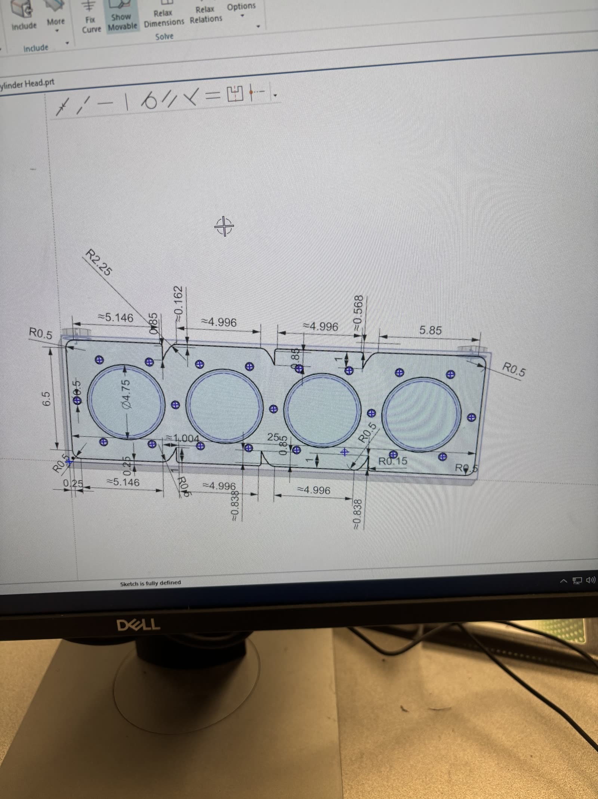

Personal engineering project
V8 engine — full CAD design

Renders

Materials applied — block, heads & gasket layer

Rear three-quarter, valve covers off

Both banks, valvetrain exposed

Cylinder head & rocker assembly detail
Design process

Short block assembly under construction — block, heads, crank, main caps, oil pan, and intake were modeled as separate parts and brought together in one top-level assembly

Early water jacket layout sketch — the block's coolant passages

Dimensioned water jacket sketch — passage spacing & bolt pattern
Walkthrough
Assembly walkthrough, clip 1
Assembly walkthrough, clip 2
About this build
This V8 was modeled from scratch in Siemens NX over about two months, built the way a real production engine is organized rather than as a single solid: the block, cylinder heads, crankshaft, main caps, oil pan, and intake were each modeled as their own part files and then brought together into one top-level assembly. The block's water jacket — the internal passages that route coolant around the cylinders — started as fully dimensioned 2D sketches, with passage spacing and bolt patterns worked out on paper before any 3D modeling began. From there the design carried through into a complete valvetrain with coil-spring-loaded rocker assemblies on both banks. It draws directly on the design-for-manufacture habits from ten years of CNC and manual machining: every part had to actually fit and assemble, not just look right.